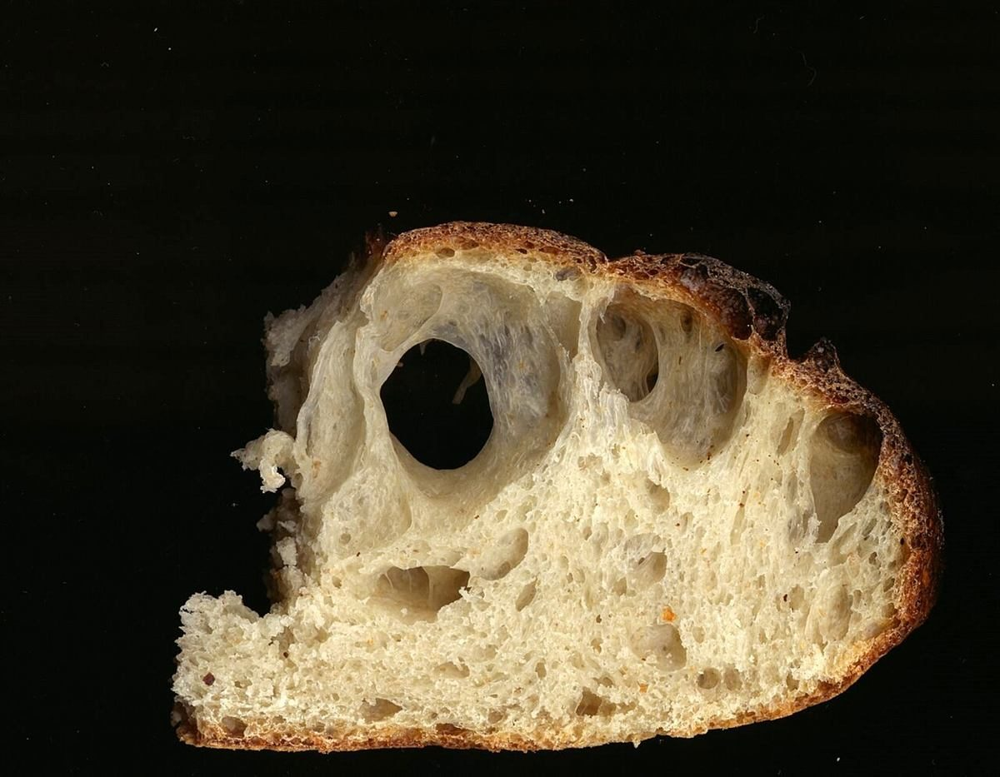
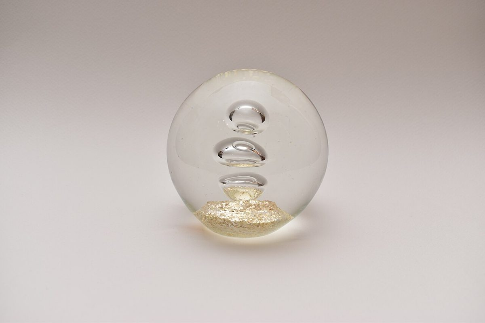

カフェ / 静岡県浜松市中央区
カフェグランツ
カフェグランツのご案内ページです。営業時間やメニューなど詳しいことは準備中。確認できているのは所在地・電話番号・Instagramです。

制作側の連想
屋号の響きから、gl- の五つの言葉を。
「グランツ」という響きから、制作側は「輝き」を連想しました(ドイツ語の Glanz は「輝き・つや」の意味です)。屋号の由来は分かりません。そこで、英語で「光る」を表す gl- で始まる言葉を五つ並べて、このサイトの見出しにしています。制作側の連想で、お店の理念・由来とは無関係です。
gl- の辞書
五つの光り方
写真はパンの焼き色・ろうそく・ガラス球などの国外・撮影地不明のフリー素材で、言葉のイメージです。お店の写真ではありません。
- 01
glint
〔グリント〕 きらり
一瞬だけ、ちかっと光る。

glint のイメージ(撮影地不明) - 02
gleam
〔グリーム〕 じんわり
やわらかく照り返す、鈍めの光。

gleam のイメージ(撮影地不明) - 03
glow
〔グロウ〕 ほんのり
消えずにつづく、あたたかな灯り。

glow のイメージ(撮影地不明) - 04
glitter
〔グリッター〕 ちらちら
小さな粒が、細かくきらめく。

glitter のイメージ(撮影地不明) - 05
gloss
〔グロス〕 つるん
なめらかな面にのる、つや。

gloss のイメージ(撮影地不明)
ご案内
確認できていること
| 所在地 | 静岡県浜松市中央区有玉南町２２１２ |
|---|---|
| 電話 | 080-8421-6740 |
| 営業時間 | 準備中 |
| 定休日 | 準備中 |
| ご予約 | 準備中 |
| 駐車場 | 準備中 |
| SNS | Instagram @cafeglanz |